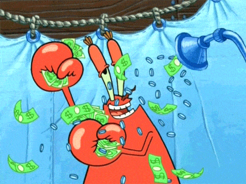
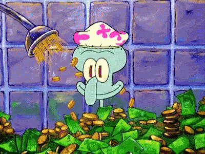

Comment j'ai doublé mon pouvoir d'achat
(et pourquoi je pense que tout le monde peut en faire autant)
Avril 2022

Salut! Voici un petit post en français qui sort un peu de l'ordinaire: en effet, on va parler pognon!
Comment en gagner plus, comment en perdre moins, et aussi comment avoir plein de trucs gratos.
Si j'écris cela aujourd'hui, c'est parce que ça fait pile un an que mes revenus passifs et mes hobbies me rapportent plus que mon salaire.
Et comme je raconte souvent ça à l'oral, autant l'immortaliser ici une bonne fois pour toutes!
Ma vie jusqu'à il y a un an.
Pour ceux qui ne le sauraient toujours pas, je suis développeur Web, mais avant tout, je suis un gros fainéant qui déteste l'idée même de travailler. Depuis mon premier mois de CDI en 2010, bien que je fasse un métier qui me plaisait, je me suis dit "c'est pas possible de faire ça pendant 40 ans, il faut que je trouve un moyen de m'arrêter dès que possible".
J'ai pas eu la bonne idée de miser sur le Bitcoin à l'époque où il était à 1, 10 ou encore 100€, mais au lieu de ça, j'ai décidé d'investir dans la pierre. Entre 2010 et 2012, j''ai acheté 3 appartements à Sophia-Antipolis en résidences étudiantes (qui, comme le Bitcoin, ne valaient quasiment rien à l'époque, imaginez: 45k€ pour un studio, 70k€ pour ce deux-pièces, avec un rendement d'environ 6%/an, aujourd'hui ça vaudrait plus du double), et quand je dis que n'importe qui auait pu le faire, c'est pas des paroles en l'air: quand tu vas à la banque en disant que tu veux acheter des apparts avec loyers garantis, ils te prêtent l'argent sans hésiter. Il suffit de mettre la somme que tu reçois tous les mois dans le remboursement du crédit, et une fois le crédit remboursé, c'est tout bénef!
Bon, moi je voulais pas partir sur 15 ans de crédit, donc j'ai mis un tiers de mon salaire en plus dans mes mensualités, histoire que tout soit remboursé en 5 ans et que je puisse repartir sur d'autres achats dès 2017.
Par contre, ce qu'il faut faire, quand on loue en meublé, c'est créer une entreprise, et tenir une comptabilité tous les ans dans laquelle on amortit l'achat du bien, tout en encaissant les loyers, ce qui permet de payer aucun impôt pendant 30 ans. Cette optimisation fiscale, ça s'appelle le régime LMNP et ça peut être mis en place soit avec l'aide d'un comptable (assez cher), soit via un site come adefi... soit à la maison sans l'aide de personne pour peu qu'on sache trier ses factures et remplir une liasse fiscale (j'ai choisi cette option).
De 2017 à 2019, j'ai cherché des apparts à acheter dans la ville où je travaillais (Nice), mais tout était trop cher ou trop vétuste, et souvent les deux en même temps. Du coup j'ai mis de l'argent de côté, et quand j'ai eu assez d'argent de côté et marre de bosser 5 jours par semaine, je me suis mis à temps partiel, et putain, quel pied d'avoir des week-ends de 4 jours! Ca change la vie, tout en réduisant finalement très peu le pouvoir d'achat (par rapport à un salaire d'ingénieur, bien sûr), dans la mesure où les impôts sur le revenu sont divisés par 4 quand on passe de un peu plus de 3000€ à un peu moins de 2000€ par mois. Après impôts, le pouvoir d'achat baisse finalement d'environ un tiers plutôt que de 50%, et en prime, le temps partiel permet de conserver 25 jours de congés payés par an.
Enfin, en septembre 2019, j'ai trouvé la perle rare: un immeuble de 3 étages avec jardin, en vente dans mon village natal (pas à Nice donc). J'avais des sous, du temps libre pour faire les travaux et la banque qui me suit, du coup je l'ai pris, et j'ai passé un an et demi à retaper l'étage du plus haut pour en faire deux appartements, et une partie du rez de chaussée histoire de les mettre en location (le premier étage était déjà loué lorsque j'ai acheté).
Le covid passant par là, j'ai profité du télétravail pour m'installer dans un des deux apparts du plus haut et louer tout le reste (sauf le rez-de-chaussée, que je vais retaper en 2022), et c'est comme ça que depuis avril 2020, cette maison se rembourse toute seule (je touche assez de loyers pour couvrir le crédit de 1550€ par mois, et à côté de ça, du coup, je touche mon salaire et mes loyers de Sophia).
La version longue de cette aventure maisonnière est dispo sur cette page.
Mais ce n'était que le début
Depuis un an, donc, j'ai enfin des revenus passifs confortables, mais j'ai aussi trouvé tout un tas d'astuces pour dépenser moins, gagner plus, recevoir plein de trucs gratuits, et je vais vous raconter tout ça, en espérant que ça puisse vous servir aussi.
1. Dépenser moins
- Si vous faites un crédit (immobilier) auprès d'une banque, ne prenez jamais l'assurance de crédit proposée par la banque. C'est là dessus qu'elles gagnent le plus d'argent. Passez par un assureur en ligne offrant les mêmes garanties pour 4 fois moins cher. J'ai gagné 3000€ comme ça. (meilleurtaux a un très bon comparateur d'assurances gratuit)
- Payez moins d'impôts: comme évoqué plus haut, louer des logements en régime LMNP et bosser à temps partiel fait économiser énormément d'impôts sur le revenu (plus de 7000€/an dans mon cas).
- Si vous avez la chance d'avoir un parent ou deux qui veut vous donner de l'argent sans attendre l'heure de l'héritage, rappelez-vous que le don à un enfant est défiscalisé à hauteur de 100 000€ par parent tous les 15 ans (mobilier et/ou immobilier). Si cet argent n'est pas nécessaire tout de suite, il peut être placé sur une assurance-vie à votre nom ou celui de vos enfants. Ainsi, il fructifiera et sera débloquable au bout de 8 ans sans frais. De plus, si un de vos parents est détenteur d'actions sur un compte-titre ordinaire et qu'il souhaite vous faire un don, il n'a pas besoin de tout vendre, au contraire: cela lui ferait payer des tas de taxes sur ses plus-values. Ouvrez plutôt un compte-titre ordinaire dans la même banque que lui, allez au guichet, et demandez un transfert de son compte vers le vôtre. Les plus-values seront automatiquement "oubliées" et vous pourrez alors vendre ces actions et empocher l'argent sans payer aucune taxe.
- Changez d'assurances. Je sais, c'est la méga flemme, même pour moi, mais les assurances auto, habitation, ou encore les mutuelles, ont des tarifs avantageux la première année, mais à partir du 13ème mois, il est souvent bien plus avantageux de résilier et d'aller ailleurs profiter de leur premiere année en promo. Il y a quelques centaines d'euros à gagner chaque année rien qu'en faisant ça.
- Ensuite, ce post n'est pas du tout sponsorisé par Casino, mais je ne saurais que trop vous conseiller de faires toutes vos courses chez Casino, et prendre l'abonnement Casino Max à 90€/an (et qui est parfois réduit à 45€).
Entre les prix de Casino que je trouve très corrects, leurs nombreuses promotions (ex: articles à -50%, 3eme article identique offert, etc), les 10% cagnottés sur la carte Casino Max après chaque passage en caisse, les opérations spéciales de l'app Casino Max où on peut gagner jusqu'à 200€ plusieurs fois par an, et les codes promos de dingo qu'ils envoient à leurs clients quasiment chaque semaine (de -40€ à -70€, ou de -20 à -40% sur vos prochaines courses, cumulables avec Casino Max), c'est bien simple, en un an j'ai divisé mes dépenses courantes par plus de deux rien qu'en devenant client chez eux, sans parler de la livraison gratuite à domicile. Non mais sans blague, essayez. Il y a quelques semaines, en accumulant toutes les promos auxquelles j'avais droit, j'ai commandé 285€ de courses et j'ai payé seulement 112€. La même chose chez Intermarché m'aurait coûté plus de 300€. Et ce mois-ci, ils faisaient notamment l'essence à 0.85€ (la différence avec le prix normal étant offerte en bon d'achat), ce qui est également très cool je trouve. - Vous avez une carte Ticket Restaurant? Au lieu de tout dépenser en Uber Eats, faites vos courses avec quand vous allez au supermarché. Et si comme moi, il vous en reste à la fin de l'année, faites un don avec, par exemple à la Croix-Rouge. Non seulement ça fait une bonne action, et en plus ça fait gagner un crédit d'impôt de 75%.
- En parlant des impôts, penser à toujours vérifier les taxes et impôts prélevés par l'Etat, et ne pas hésiter à contester le moindre chiffre qui vous semble inexact. En cas d'erreur ils remboursent assez facilement.
- Enfin, je recommande Dealabs pour recevoir des tas de bons plans, codes promo (dont Casino, AliExpress, Rakuten...) et erreurs de prix. C'est une très bonne communauté.
- De façon générale, pour tout achat, recherchez les meilleurs prix, les codes promos, les offres de cashback, etc. Et si vous voulez acheter un jeu, un film, un cd, une console, un jeu vidéo, éviter de le faire le jour de la sortie: c'est là que c'est le plus cher.

2. Choper des trucs gratuits
- J'habite à 100m des conteneurs à poubelles de ma rue. Je ne "fais pas les poubelles", mais il m'arrive régulièrement de passer devant et de voir posés par terre des meubles, fauteuils, lits, tables, chaises, chaises longues, parasol, coffres, paniers, ustensiles de jardin comme neufs. Du coup, tout ce qui se trouve dans mon jardin, sur ma terrasse, et dans une partie de l'ameublement des appartements que je loue, c'est de la récup. En discutant un peu, j'ai découvert que mes voisins ont des épouses qui adorent changer leur déco tous les ans et jeter leurs anciennes affaires (ceci explique cela). Depuis, l'un d'eux a pris mon numéro, et au lieu de jeter ses meubles, il les dépose directement dans ma cour. Je trouve ça marrant.
- On n'imagine pas le nombre de boîtes qui recherchent des testeurs pour leurs produits, y compris des produits de luxe. Je suis tombé par hasard sur le forum du fabricant Wemax pendant qu'ils faisaient la campagne Kickstarter de leur prochain videoprojecteur (si vous y allez, utilisez mon lien de parrainage). Depuis décembre, leur CM distribue littéralement des vidéoprojecteurs en achange de reviews, articles de blog ou de tests en vidéo. En même pas 6 mois, j'ai gagné 4 videoprojecteurs: Wewatch V30 (100$), Wemax Vogue Pro (1200$), Wemax Nova 4K (2600$), ainsi que leur prochain modèle qui sortira en juin.
- Aliexpress distribue régulièrement des objets gratuits (ou à moins d'un euro) à leurs nouveaux clients. Cartes microsd, power banks, earbuds, rasoirs électriques...). Il suffit de créer un nouveau compte à chaque fois pour en bénéficier. Ca marche même si vous mettez les mêmes adresses et payez avec le même compte paypal sur tous vos comptes (là encore, je conseille de passer par Dealabs pour ne pas rater ce genre de promotions).
- De façon générale, faut pas se priver des services payants qui offrent un mois gratuit (Deezer, Spotify, Netflix, Amazon Prime, etc) ou un premiere commande à tarif réduit (je pense notamment à la très bonne box de cuisine HelloFresh, d'ailleurs si vous utilisez mon lien de parrainage, vous aurez 60€ offerts sur vos premières commandes, et notamment votre première box de 6 repas qui revient à 19€).

3. Gagner de l'argent en plus
- Ouvrir des comptes en banque en ligne. Souvent, ils offrent 50 à 100€, voire plus si vous parrainez des gens. Certains organismes de crédit offrent aussi des sous lorsqu'on passe par eux pour faire des achats en ligne avec paiement en plusieurs fois sans frais. Ce genre de chose marche plutôt bien, faut juste penser à résilier avant le renouvellement du contrat ou de la carte bancaire, généralement au bout d'un an.
- Répondre à des sondages et enquêtes. Les sites d'enquêtes sont parfois des arnaques, mais G2 est plutôt pas mal: en donnant son avis sur des logiciels, on peut gagner entre 5 et 30€. (je l'ai fait une dizaine de fois quand je m'ennuyais, même avec des logiciels que je ne connaissais pas, et ça marche).
- Un autre avantage du boulot à mi-temps: j'ai reçu la prime inflation en Janvier! :3
- Ne jamais laisser traîner des sous sur son compte courant. Les mettre sur un Livret A, un LDDS, un CEL ou une assurance-vie garantit des intérêts annuels, même si c'est autour de 100 euros, ça vaut le coup.
- Si vous faites un achat immobilier, il est très probable que le notaire vous demande une avance sur les frais d'écriture et les émoluements, puis vous oublie pour toujours, alors que son travail n'est pas terminé. J'ai payé le mien en 2019. En 2022, je me suis dit "eh mais au fait, j'ai jamais reçu mon acte notarié!". Alors je l'ai appelé et dans la semaine, il m'a envoyé non seulement mon cher acte, mais aussi un trop perçu de 450€. Là encore, c'est toujours ça de pris, même si c'est dommage qu'il faille réclamer toujours et encore.
- Créer des jeux. Vous le savez probablement: chaque année, je développe un mini-jeu en 13kb pour le concours js13kgames. Les 100 meilleurs jeux reçoivent des super goodies (t-shirt, stickers...). Mais depuis quelques années, on peut aussi gagner des prix en cryptomonnaies. En 2021, j'ai participé à toutes les catégories imaginables en créant mon jeu LOSSST, et comme celui-ci a bien plu, j'ai obtenu un peu plus de 700€ en cryptomonnaies (NEAR coins, Filecoin, et quelques autres). Vu que je ne les ai pas vendues et que le marché se porte bien, aujourd'hui elles valent quasiment le double. Cette année, en avril, j'ai participé à GameDevJS Jam avec mon jeu IT'S TOO RAW, et ai remporté un peu plus de 1100€!
- Obtenir une subvention d'un protocole crypto: IPFS et NEAR (sponsors de js13kgames et gamedevjsjam) ont un énorme budget publicitaire. Il suffit d'aller sur leur Github ou leur Discord, dire qu'on bosse sur un jeu et/ou une app qui utilise leur protocole, et ils vous envoient des cryptomonnaies gratos. NEAR m'a donné environ 200 balles, quant à IPFS, euh, comment dire... ils m'ont envoyé 5000 FUCKING DOLLARS en Filecoins. (via leur programme "micro grant", parce que oui, quand ils distribuent 5000 dollars, c'est une micro dépense pour eux. Pour des plus gros projets, ça peut monter bien plus haut). Quand je les ai reçus, j'en ai revendu 1000€ pour vérifier que c'était bien vrai, et ça l'est: l'argent s'est bien retrouvé sur mon compte.
Conclusion
Bref, tout ça pour dire, on a peut-être pas de chance en santé ou en amour, mais financièrement on s'en sort, c'est déjà ça.
J'ai probablement beaucoup de chance, mais je continue à croire que tout le monde peut faire pareil, et qu'il suffit de se lancer.
Alors, pourquoi pas essayer? Vous me direz ce que ça donne.
Bisous,
Max